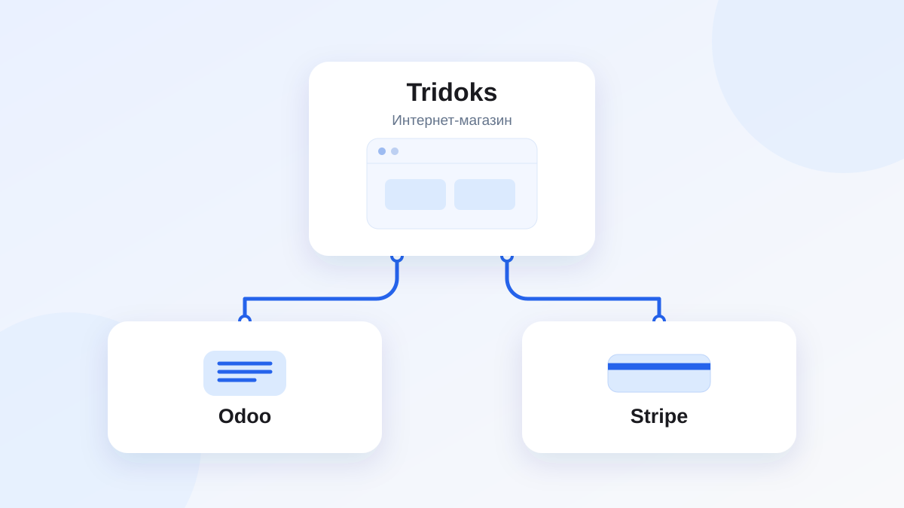

Кейс • Интернет-магазин • Интеграция в работе
Tridoks: магазин, Odoo и Stripe
Команда Студии Владислава Червякова отвечает за архитектуру всех интеграций, сопровождает Odoo и консультирует Tridoks. Интеграцию магазина с Odoo и Stripe ведём совместно с разработчиком сайта клиента.

Исходная задача
Tridoks развивает интернет-магазин и использует Odoo. Студию подключили, чтобы связать магазин с Odoo и Stripe для оплаты заказов, а также консультировать команду клиента и сопровождать Odoo.
Сложности и ограничения
Интернет-магазин и его текущая реализация появились до подключения Студии. Разработчика сайта клиент нанял ранее, поэтому решения на границах магазина, Odoo и Stripe нужно согласовывать с отдельным участником проекта и встраивать в уже работающий сайт.
Что реализовано
Архитектуру всех интеграций со стороны Студии спроектировал Червяков Владислав. Реализацию и сопровождение ведёт команда совместно с разработчиком сайта клиента.
- Спроектирована архитектура взаимодействия магазина, Odoo и Stripe.
- Консультации по возможностям и использованию Odoo в контексте магазина.
- Сопровождение Odoo по возникающим вопросам.
- Интеграция сайта интернет-магазина с Odoo и Stripe для оплаты заказов.
- Совместная проработка задач с разработчиком сайта клиента.
Текущий результат
У проекта есть согласованная архитектура интеграций, на основе которой команда Студии развивает связку магазина, Odoo и Stripe и сопровождает Odoo. Проект продолжается с июня 2026 года.
Похожие задачи: интеграции Odoo и сопровождение Odoo.
Нужно связать магазин с Odoo?
Опишите сайт, Odoo и задачи по заказам и оплате — обсудим состав интеграции.
Оставить заявку